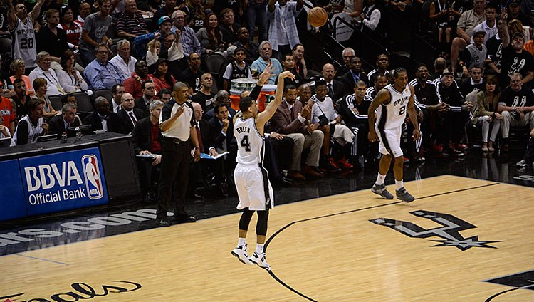

Rzuty za trzy punkty – rodzaj rzutu w koszykówce. Wykonuje się je zza linii rzutów za trzy punkty, która w Europie jest ulokowana na 6,75 metrów od środka kosza (przed 2010 rokiem - 6,25 metra) , a w na 7,24 metrów .
Na stałe wprowadzony w 1961 roku w Stanach Zjednoczonych (liga ABL). W ABA od 1967, w NBA od 1979, a w przepisach FIBA od 1984.
